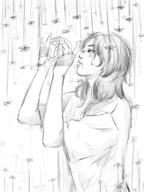
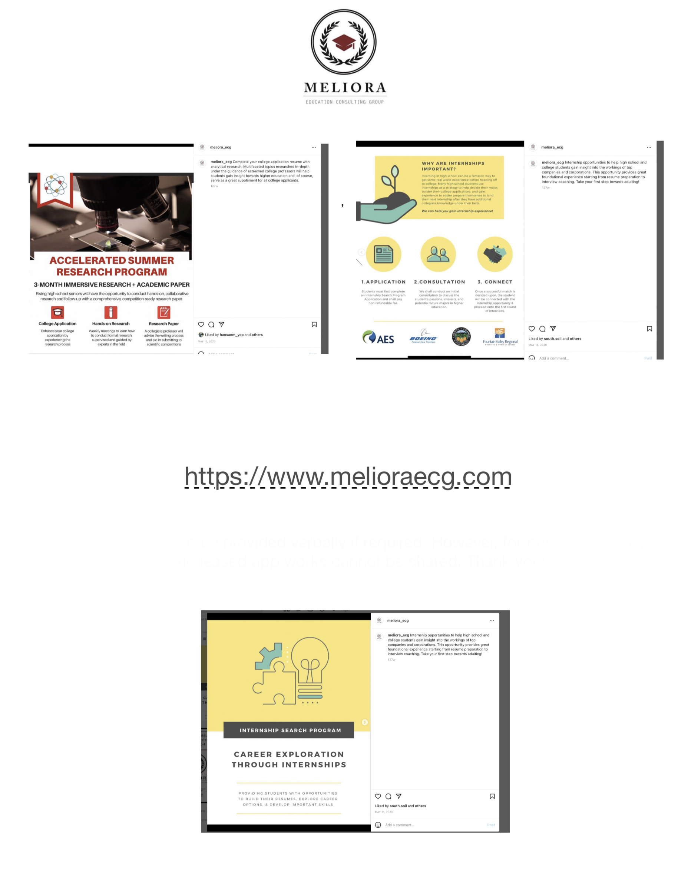
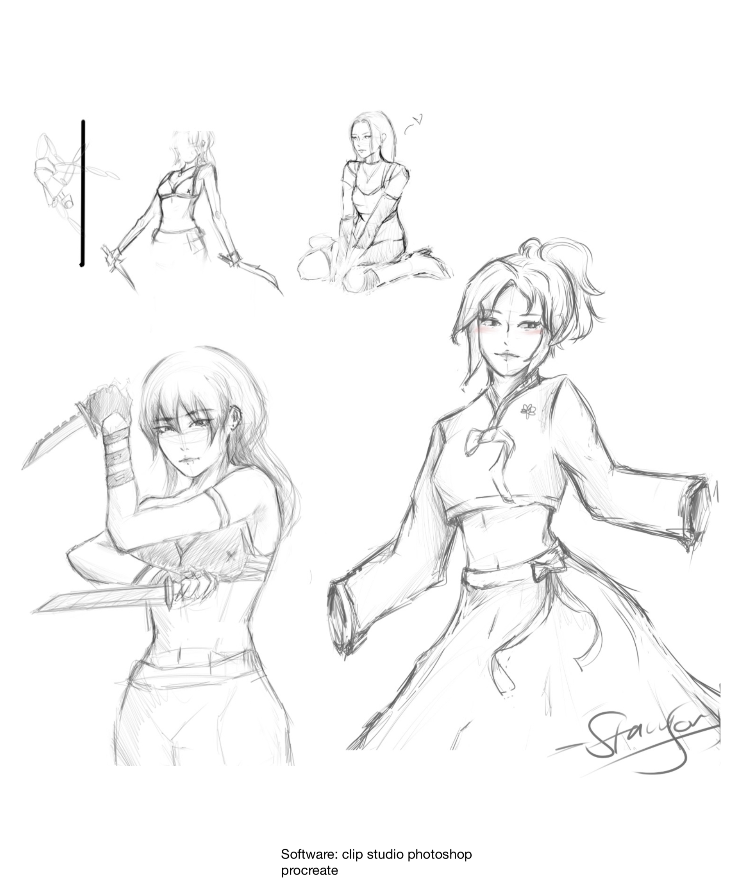
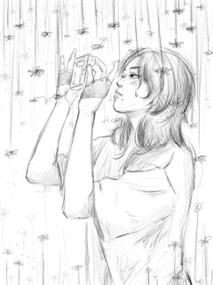
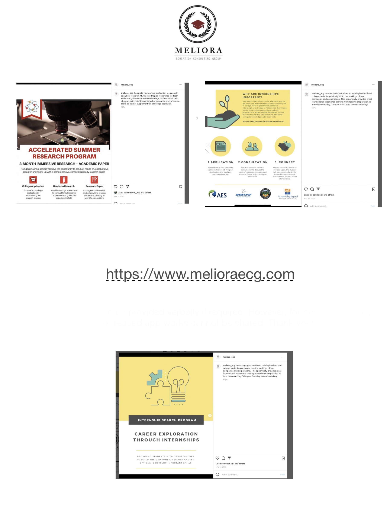
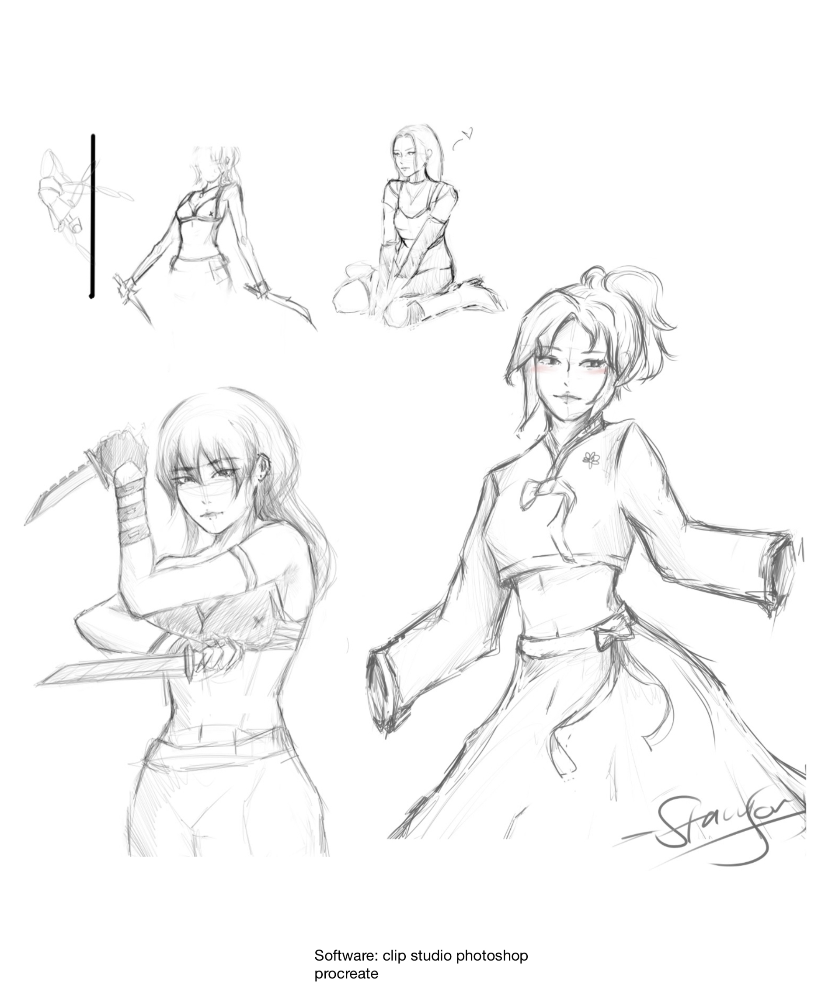

Stacy Song
Hello! My name is Stacy Song
I am currently a student attending the University of California Riverside. I am an education major with a concentration in learning and behavioral studies. I also reside near the school.
Some personal information about me is that I am an artist. In my free time, you will be able to see me drawing, writing, reading, and dreaming. Some highlights of my personality are my compassion, flexibility, generosity, patience, kindness, and much more. I am a huge animal fan and I am highly interested in going into the animal science field during or after my educational undergraduate degree.
I am a hard worker who has a long hisotry of credible works in and outside of the educatonal setting. I am licensed in teaching archery, in excel, photoshop, premire, along with long term experience with clip studio and canva. I am a first generation person of color who can speak English, Korean, and Japanese.
Here are some of my favorite quotes!
“It is hard to fail but it is worse never to have tried to succeed.” —Theodore Roosevelt
“Only Evil and Greater Evil exist and beyond them, in the shadows, lurks True Evil. True Evil... is something you can barely imagine, even if you believe nothing can still surprise you. And sometimes True Evil seizes you by the throat and demands that you choose between it and another, slightly lesser, Evil.” – Renfri
“Stay close to anything that makes you glad you are alive.” —Hafez
“The bad news is time flies. The good news is you’re the pilot.” —Michael Altshuler
“Unless you try to do something beyond what you have already mastered, you will never grow.” —Ralph Waldo Emerson
Here is an excerpt of what I wrote to UCRs application about one of my high schol internships: My future plans intertwine immensely with my passions as I love to do what I love on scales larger than the universe. As a child, I would playact as a businesswoman, strong and intelligent. I’ve carried mountains of ambition that stemmed from this love for buying, selling, making, and learning. I wished for a world of obstacles, experience, and knowledge. To do just that, I’ve taken on my first steps working on internships, specifically at Meliora: an educational service company. I’ve met the opportunities that led me to learn not only to manage time, focus, and persevere but to strengthen my passion. I’ve joined and actively participated in clubs such as Best Buddies that helped me build character and Joy Lee archery which allowed me to build discipline and a strong mind. Life has been an intriguing path and I am curious for more. I find power in strengthening the mind, making connections, and working for a positive change which I dream to do at UCR.
Experience
customer service
• Keep records of customer calls, transactions, complaints, comments, as well as actions
• Completed contract forms, prepared changes of address records, or issued service discontinuance orders, using computers and cashiers.
• Resolved customers' service or billing complaints by performing activities such as exchanging merchandise, refunding money, or adjusting bills
Customer Service
• Refer unresolved customer grievances to designated departments for further investigation.
• Confer with customers by telephone or in-person to provide information about products or services, take or enter orders, cancel accounts, or obtain details of complaints.
USA archery assisant
• Set up and made sure to keep sessions for beginner archerss safe and fun!
• Assist with strateg, budget, supplies, equipment and inventory.
Education
UC Riverside
Troy High School
Portfolio




© Stacy Song


